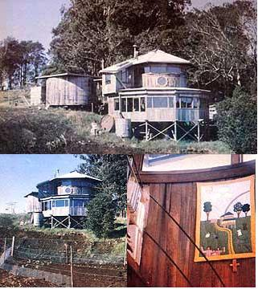

Report From Them Thats Doin'
Pour energy and imagination into a decrepit old water tank, and you get . . .
Some folks spend years planning each and every detail of their move back to the land . . . but not my family. In fact, when we fled urban Oahu in 1977, all we really had going for us were five undeveloped acres on Hawaii ("The Big Island") and a lot of high expectations.
Unfortunately, my story is not about how we simply went off with our good intentions-and without money, skills, or clearly defined goals-and successfully homesteaded a tropical paradise. The fact is, within four short months after making our move, we found ourselves in a relatively dismal situation.
There we were-my wife Kaye and I, our daughter Sally, one goldfish, and three dogs-all sardined into a camper parked halfway up our hilly property on the extremely rainy Hamakua coast. The house plans that a student architect had drawn up for us had turned out to be impractical . . . because we simply couldn't afford the wood required to follow them! Several months of all but steady precipitation hadn't helped the sensation that our close quarters were shrinking, either. And a sense of urgency to somehow find a way to establish ourselves in a good, comfortable, economical home seemed to loom ever present.
Then, one unusually sunny day while working in our patch of Chinese peas, I was taking mental inventory of our possessions-good acreage . . . a promising building site . . . the camper . . . an enormous old disassembled water tank I'd bought-when inspiration hit! Admittedly, that redwood reservoir was little more than a pile of rotting boards: dozens of termite-infested staves neatly stacked not far away from our all-too-humble mobile shelter. But, I thought, maybe -with a lot of work-we could resurrect that 30-year-old tank and (could it be true?) turn it into a dream house!
It's strange how, in an instant, one's perspective on a problem can do a complete flip-flop. Here I was looking at a heap of decaying lumber and thinking "home", when only moments before I would've told you that the mess of wood was of dubious value and had already been more trouble than it was worth.
I'd seen ads for the 25,000-gallon vat, and two similar structures, before we'd left Oahu. They'd been rescued from the cliffs above Kaaawa after having served as holding tanks for that town since 1946. Each had slats three inches thick, six inches wide . . . and 14 feet high. The steel bands that held the planks together were 5/8 inch thick, and the floor was more than 20 feet in diameter.
I thought, on first reading the advertisements, that one of the containers might make an ideal homestead irrigation reservoir. But the asking price was $3,000 . . . which was well above what our budget could bear. So I forgot the whole issue until about a month after we'd moved, when I saw an ad again. This time only one tank was advertised . . . for $3,000 or best offer. Kaye and I figured $1,500 would be a fair price, and-much to our surprise-the bid was accepted. That's when our troubles really began!
The entire gigantic cask had to be loaded (somehow) piece by piece and (someway) transported across Oahu's mountains to the docks in Honolulu where somebody (me) had to put the boards on a barge (with no help), strap them in secure bundles, and ship the entire ponderous cargo 200 miles to our island . . . where-you guessed it-the whole board'by-board process had to be reversed until the clanged thing finally ended up on our property. Auwë! (That's the Hawaiian equivalent of "Oh, brother!")
I'll spare you the horror-by-horror description of the two days I spent getting the chore accomplished. I won't tell how I felt when I arrived to pick up my purchase, only to find a stack of insect-eaten planks festering in the damp confines of a banana orchard . . . nor will I relate how I trekked, late at night, across Oahu's rainy high country in a rented flatbed truck piled high with unwieldy lumber. I won't even burden you with the story of the countless hours I spent getting the shipment off my vehicle, onto the boat, and prepared for transport.
What I will say is that I never could have got the job done without the help of some good-hearted people-such as the sellers, who lent me a hand with the initial loading and gave me some spare slats-and without Lady Luck herself . . . who seemed to intervene in my behalf at just the right time (such as when I ran into a friend who just happened to have a banding machine that I could use to package the planks). And then there was my neighbor Harvey, who spared me much work by very graciously contributing his time, his ten-wheel-drive logging truck, and his forklift . . . to help me move the cargo off the barge and up a 2,500-foot rise to my property.
After that, I spent an entire week shuttling back and forth in my old pickup . . . toting precariously balanced loads of components-braces, beams, flooring, ribs, and bands-farther up our inclining acreage to a spot next to our camper.
Meanwhile, I nursed nagging doubts about the vessel's ability to hold water . . . and suffered a growing conviction that what I really had on my hands was a bona fide redwood white elephant. Little wonder, then, that our spirits took a lift when we decided to take action . . . and attempt to build a house out of that horrible heap!
Our initial-and perhaps our wisest-move was to hire Ambrose Pollack, a young carpenter (and, it turned out, an artist), to help us design the home. Without his insights, our efforts would likely have produced a gloomy little shed.
The first really big task was to recondition the redwood itself. I cleaned and smoothed every board, using an electric planer powered by a small gasoline generator. Kaye then treated each plank with termite repellent and water seal . . . and applied a final coat of Danish oil to the tobe-interior-facing sides. Presto! Years of use and abuse, as well as the ravages of wet rot and dry rot, were erased. The lumber I hauled on up to our building site sure looked better than the moldering mass I'd labored with during the trip from Oahu!
We next laid a post and piling foundation, and assembled the tank on top of it. Interestingly, the dynamics of our structure eliminated any need for conventional bracing. The inward pressure exerted by the hoops that secure the boards in a circle is offset by a resisting force created by the slats' sharply beveled edges, resulting in a sturdy stand-up enclosure!
Of course, clambering over the 14-foot walls was not the easiest way to get into and out of the under-construction dwelling . . . so-with my trusty chain saw-I cut out our planned doorways. And soon after that . . . near-disaster struck.
I was alone, working-perched on a ladder-at the top of the tank when I fell, shattering my heel bone. I crawled 350 feet to our camper, applied ice, and hobbled down the hill for help. Luckily, I encountered one of the maybe two cars to use our road during the course of any given day, and got medical attention. But I was flat on my back for six weeks.
Nevertheless, I made use of the time (and the season's Christmas cards) to build a scale model of our project. And when I returned to work (on crutches), I had a prototype that brought our ideas to life and guided us during the remainder of the construction period.
Before we knew it, we were standing back admiring a solid, comfortable, attractive, and unique residence that we'd built ourselves . . . from a run-down old water tank! Hello home, farewell camper!
We've lived in the yurtlike abode for two years now. Our daughter Sally is nine, and our son John-the newest addition to our family-is 18 months old. We've made a few additions to our home as well, and plan to continue building on to and expanding the domicile. We're happy, snug, and dry . . . even during our region's infamous driving horizontal rainstorms (which did cause leaks between the slats until I came up with the solution: a good coat of clear boat-bottom epoxy!).
Our family has come a long way from those dismal days spent crammed into the camper. I still find it necessary to take on occasional jobs to pay for food and supplies, but we're on our way to real self-sufficiency. I'm sure we'll get there, too . . . because, in the process of converting that dilapidated old tank into comfortable living quarters, we underwent a valuable transformation ourselves. We learned to do. . . and to make do.
We found that, as a family, we can always adapt to suit our circumstances. At the same time, we developed the ability to laugh at ourselves and at our predicaments. And we discovered some basic truths that help keep us keepin' on: for example, "Everything will take twice as long and cost double what you figured" . . . "Head toward, not away from" . . . "Be more flexible" . . . and "if you're not missing more than seven ingredients in the recipe, substitute and go for it!"
In fact, I'd like to repeat the most important words in that last maxim and dedicate them to those of you who have almost-but not quite-made the commitment to get back to a more natural, more resource-conscious, more self-sustaining life: Don't let doubts stand in your way, folks . . . go for it!
|
 CLOCKWISE FROM THE TOP: The Lundburgs' creativity and hard work turned a mass of moldering redwood boards into a cozy, yurtlike abode . . . . The rustic interior is enhanced by a quilted wall hanging . . . . The fertile acreage boasts a family-sized vegetable plot |
|
|